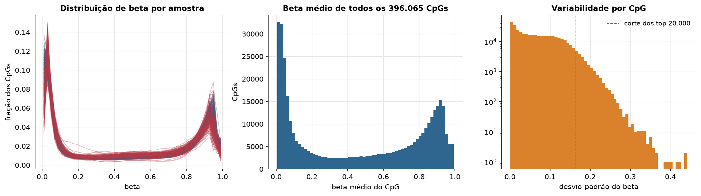
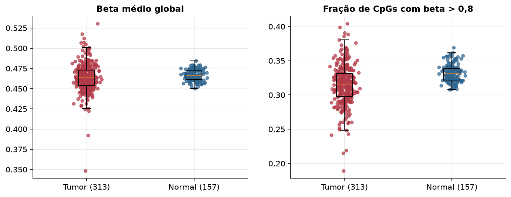
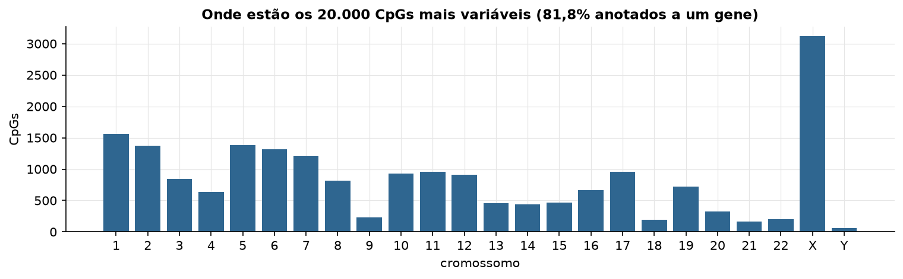
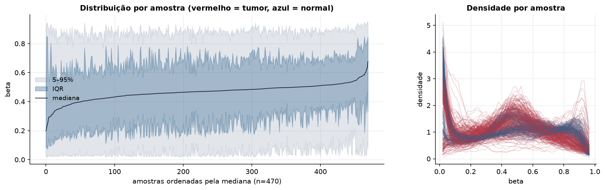
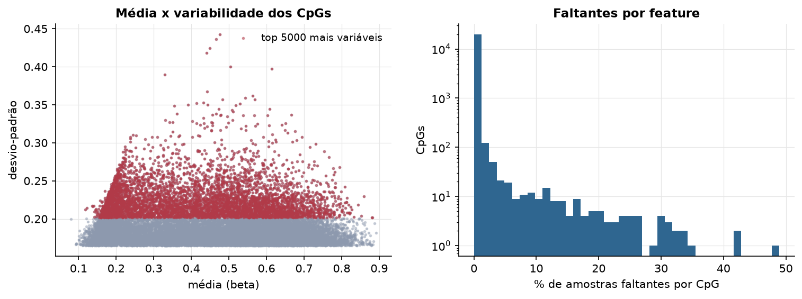
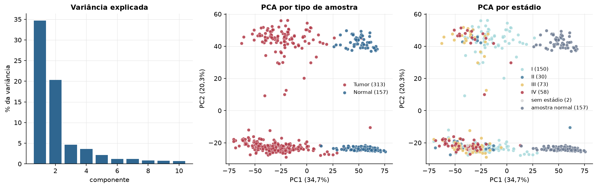
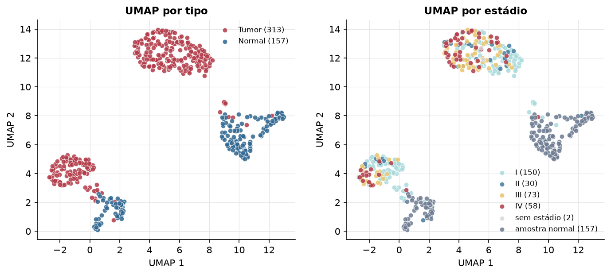
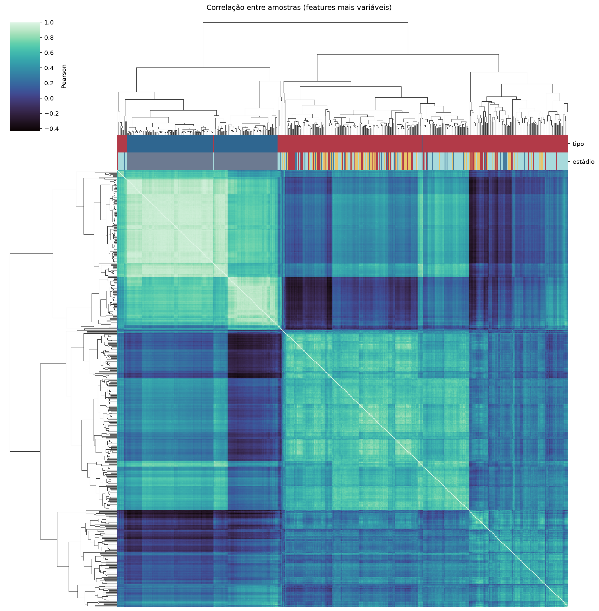
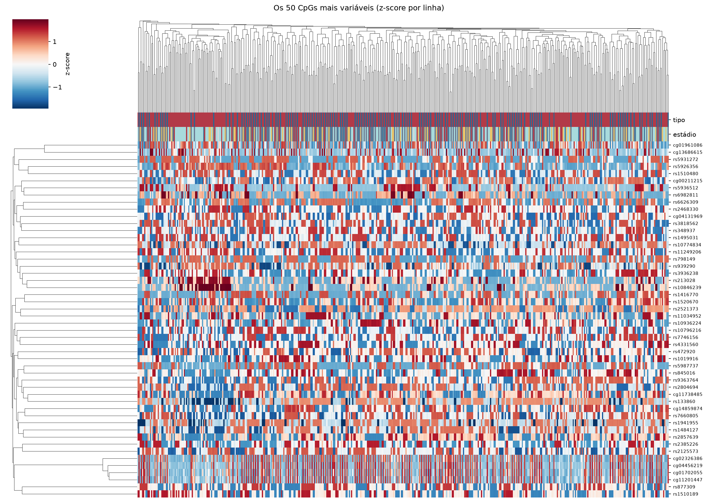
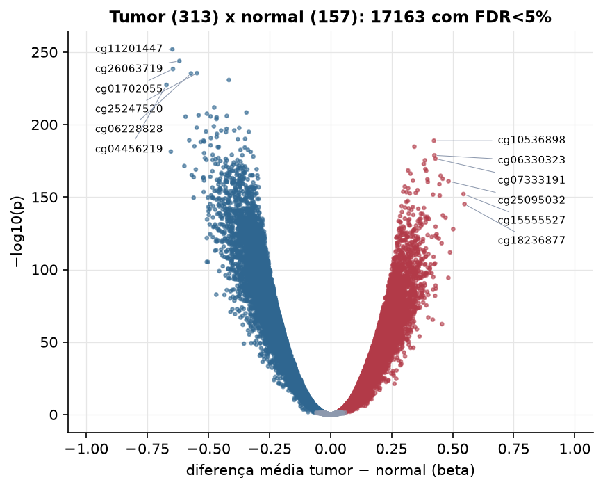

KIRC · Metilação do DNA (450k)
Illumina Infinium HumanMethylation450, valores beta (0 a 1) · gerado em 21/10/2026 22:52
396.065CpGs medidos
382.814CpGs sem faltante
20.000CpGs
313amostras tumorais
157amostras normais
0,2%valores faltantes
Fonte: PanCanAtlas HM450 via API do Xena
O array tem ~485 mil CpGs. Para não ocupar espaço, guardamos estatísticas de todos os CpGs e só os 20.000 mais variáveis para PCA, UMAP e heatmaps.
Principais resultados
- A distribuição de beta é bimodal: a maioria dos CpGs está quase toda desmetilada (perto de 0, típico de ilhas CpG em promotores) ou quase toda metilada (perto de 1, corpo gênico e regiões intergênicas). 31,2% dos CpGs têm beta médio intermediário (0,2 a 0,8).
- Beta médio global: 0,463 nos tumores e 0,466 nos normais (hipometilação global no tumor, como é comum em câncer).
- 20.000 CpGs medidos em 470 amostras (313 tumorais e 157 normais); 0,2% dos valores estão faltando.
- Os dois primeiros componentes principais explicam 34,7% e 20,3% da variância das features mais variáveis.
- Correlação mediana entre amostras: 0,36.
- Tumor x normal: 17163 CpGs diferentes com FDR < 5% (8821 maiores no tumor, 8342 maiores no normal; 157 pacientes têm o par tumor-normal).
- Mais aumentados no tumor: cg10536898, cg00029282, cg06330323, cg07333191, cg04511534, cg17862152, cg19648552, cg15994182.
- Mais reduzidos no tumor: cg11201447, cg26063719, cg01702055, cg25247520, cg06228828, cg00347746, cg04456219, cg10183885.
- Associações clínicas com p < 0,05 nos componentes principais: PC1 com estádio (p=1.2e-08); PC2 com estádio (p=7.1e-14); PC3 com estádio (p=0.002); PC1 com sexo (p=0); PC2 com sexo (p=0.00062); PC2 com idade (p=1.1e-05).
Distribuição global



Exploração dos CpGs mais variáveis
Distribuição dos valores


Estrutura das amostras




Tumor x normal

Features mais diferentes entre tumor e normal
| diferenca_tumor_menos_normal | t | p | fdr | |
|---|---|---|---|---|
| cg11201447 | -0.647 | -71.064 | 1.51e-252 | 3.02e-248 |
| cg26063719 | -0.619 | -72.098 | 1.56e-244 | 1.56e-240 |
| cg01702055 | -0.645 | -66.138 | 5.16e-239 | 3.44e-235 |
| cg25247520 | -0.547 | -66.892 | 3.78e-236 | 1.89e-232 |
| cg06228828 | -0.571 | -70.968 | 6.41e-236 | 2.56e-232 |
| cg00347746 | -0.416 | -63.263 | 1.8e-231 | 5.99e-228 |
| cg04456219 | -0.672 | -66.52 | 4.68e-228 | 1.34e-224 |
| cg10183885 | -0.476 | -61.111 | 1.64e-212 | 4.11e-209 |
| cg03147185 | -0.344 | -56.433 | 5.59e-209 | 1.24e-205 |
| cg08305942 | -0.506 | -55.569 | 3.56e-208 | 7.12e-205 |
| cg03498081 | -0.54 | -55.308 | 3.91e-207 | 7.11e-204 |
| cg10794973 | -0.424 | -55.073 | 1.26e-206 | 2.11e-203 |
| cg01890836 | -0.491 | -56.005 | 2.38e-206 | 3.66e-203 |
| cg10025586 | -0.593 | -55.386 | 3.84e-206 | 5.49e-203 |
| cg14204586 | -0.466 | -58.61 | 1.01e-205 | 1.35e-202 |
| cg21876918 | -0.467 | -55.059 | 1.54e-204 | 1.93e-201 |
| cg20108357 | -0.478 | -54.259 | 1.52e-199 | 1.79e-196 |
| cg26680608 | -0.548 | -52.609 | 1.39e-198 | 1.55e-195 |
| cg27300045 | -0.374 | -52.79 | 2.16e-198 | 2.28e-195 |
| cg04474049 | -0.425 | -52.434 | 9.26e-198 | 9.26e-195 |
| cg06783197 | -0.394 | -53.343 | 1.29e-196 | 1.23e-193 |
| cg13921921 | -0.448 | -53.185 | 1.4e-196 | 1.28e-193 |
| cg04188920 | -0.51 | -54.815 | 6.52e-196 | 5.67e-193 |
| cg19371349 | -0.334 | -54.275 | 1.15e-195 | 9.6e-193 |
| cg07866909 | -0.428 | -52.492 | 1.69e-195 | 1.35e-192 |
| cg03063658 | -0.465 | -52.612 | 2.99e-194 | 2.3e-191 |
| cg14780070 | -0.466 | -50.766 | 4.48e-192 | 3.32e-189 |
| cg06817454 | -0.49 | -50.509 | 1.9e-191 | 1.36e-188 |
| cg01815263 | -0.349 | -51.022 | 7.31e-191 | 5.04e-188 |
| cg15962197 | -0.379 | -50.38 | 1.33e-190 | 8.87e-188 |
Associação com variáveis clínicas
p-valores da associação dos três primeiros componentes principais (só tumores) com estádio (Kruskal-Wallis), sexo (Mann-Whitney), idade (Spearman) e sobrevida global (Cox univariado).
| estádio (Kruskal) | sexo (Mann-Whitney) | idade (Spearman) | sobrevida OS (Cox) | |
|---|---|---|---|---|
| PC1 (21,0%) | 1.2e-08 | 0 | 0.374 | 0.157 |
| PC2 (13,0%) | 7.08e-14 | 0.000624 | 1.11e-05 | 6.65e-06 |
| PC3 (7,4%) | 0.002 | 0.481 | 0.912 | 5.91e-07 |